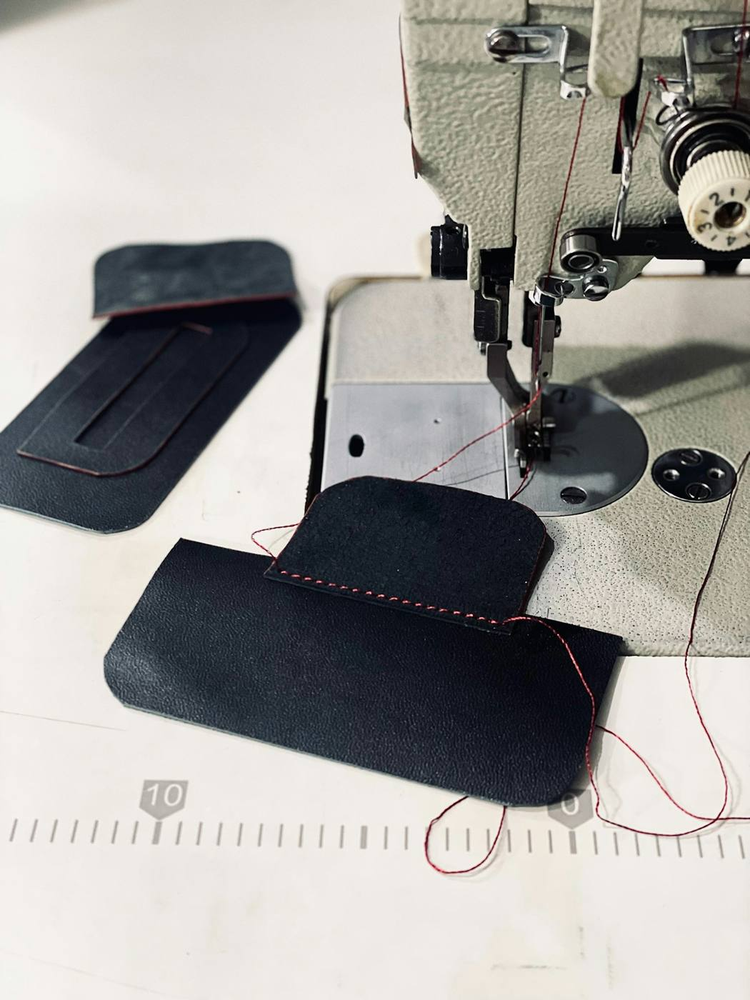
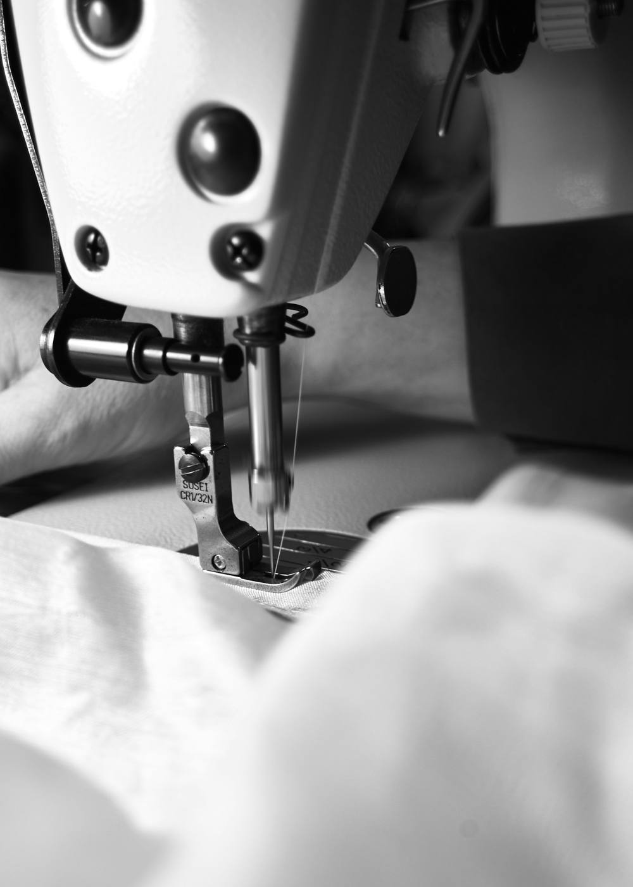

Un atelier au Port-Rhu, à Douarnenez, pour vos sièges, coussins et garnitures : auto, moto, bateau, médical et décoration.
Sellerie Telam travaille à la main la toile, le cuir et le tissu d'ameublement, pour une pièce neuve ou pour redonner vie à une sellerie usée.

Création. Une sellerie neuve, dessinée selon l'usage, le support et la matière choisie.
Rénovation. Une pièce déchirée, tachée ou affaissée est démontée, regarnie et recousue.
Pour un devis, passez à l'atelier avec la pièce ou envoyez quelques photos par message sur Facebook ou Instagram.
Horaires d'ouverture : à confirmer par message avant votre passage.